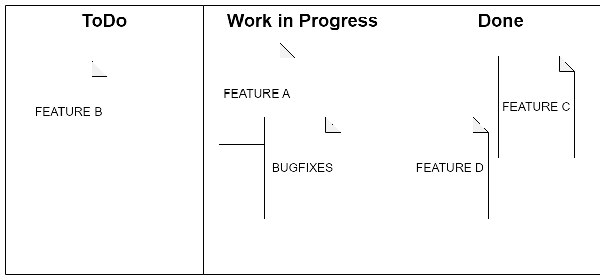

Kanban
Frage an ChatGPT: Erkläre mit bitte Kanban
Kanban ist eine Methode des Arbeits- und Projektmanagements, die hilft, Aufgaben effizient zu organisieren und den Arbeitsfluss zu optimieren. Sie stammt ursprünglich aus der japanischen Automobilindustrie (Toyota) und wird heute oft in der Softwareentwicklung, im Projektmanagement oder allgemein in agilen Teams eingesetzt.
Typisch ist ein Kanban-Board, das meist in drei Spalten unterteilt ist:

Jede Aufgabe ist eine Karte (z.B. ein Post-it oder ein digitales Ticket), die von links nach rechts wandert, je nachdem, wo sie im Prozess steht.
Kernprinzipien
-
Visualisiere die Arbeit:
Alle Aufgaben sind sichtbar - das Board zeigt auf einen Blick, woran gearbeitet wird.
-
Begrenze parallele Arbeit (WIP = Work In Progress):
Teams sollen nicht zu viele Aufgaben gleichzeitig machen. So bleibt der Fokus klar, und Arbeit wird wirklich fertig.
-
Steuere den Fluss:
Beobachte, wie Aufgaben durchs System laufen. Gibt es Staus? Wo dauert's zu lange? Ziel: ein stetiger, gleichmäßiger Flow.
-
Mache Regeln explizit:
Es ist klar definiert, wann eine Aufgabe z.B. von „In Progress“ zu „Done“ wechseln darf (z.B. nach Review).
-
Verbessere kontinuierlich:
Kanban ist keine Einmal-Lösung - Teams schauen regelmäßig, wie sie besser arbeiten können.
Vorteile
- Besserer Überblick
- Schnellere Reaktion auf Veränderungen
- Weniger Multitasking → höhere Effizienz
- Teamübergreifende Transparenz